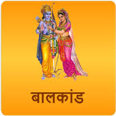

|  |
Dashrata the king of Ayodhaya had three wives
named as Kaushalaya,Kaikay,and Sumitra.Rama was born
to Kaushalaya,Bharata to Kaikay and Laksmana
and Shatrughana to Sumitra.whwn they were grown-ups Rama and Laksmana were asked by their father to accompany Rishi Vithvamitra to the forests to fight the demons. They were bestowed with supernatural weapons and instructions by the Rishi. Accompanied by sage Vishwamitra they reached Mithila where king Janaka reined. King Janaka happened to have arranged Savayamver ceremony for his daughter Sita with the condition that whosoever breaks the bow of Shiva would get the hand of his daughter. Rama married Sita after breaking the bow and after the Savayamver they retum to Ayodhaya.
|
|---|
| Back | Home Page |